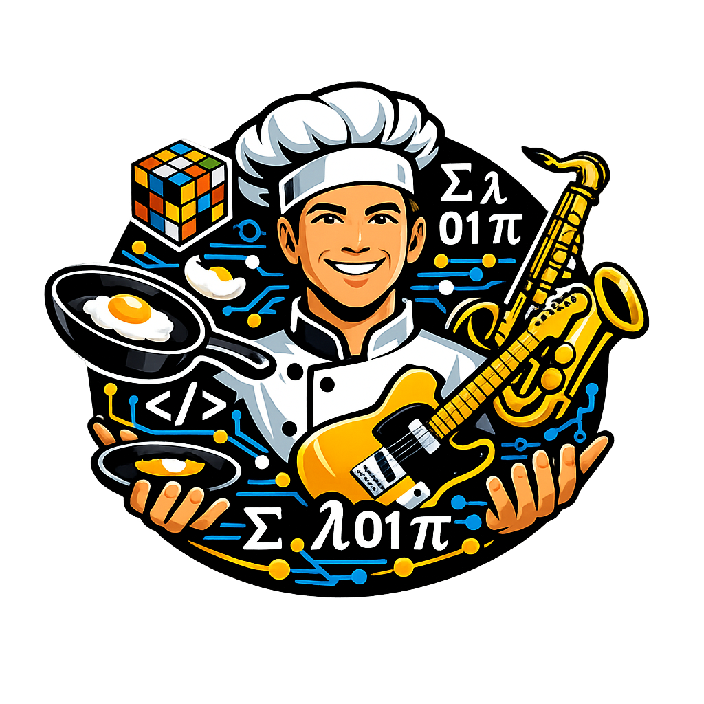

All the work presented here is not intended as being in development, it is an idea shared with the public unless explicitly stated otherwise. All repositories should be understood as conceptual showcases...
| Repo | Tech | Status | One‑line |
|---|---|---|---|
| Md2Arxive | OCaml | Proof‑of‑concept · Unmaintained | Markdown → LaTeX transpiler for arXiv submissions, with formal semantics and compiler pipeline. |
| Docxwatermarker | Python | Production‑tested · Case study · Unmaintained | Byte‑preserving image replacement in .docx templates, with formal specs and reproducible builds. |
| Il Circo Delle Asserzioni Fantastiche | Hidden mathematics | Probabilistic Stability | Formal specification for people with no time, exploring the hidden wonders of compilation. |
| A historic–algorithmic dish between Skolem and Montanari | Text | Work in Progress | Ten Acts featuring Skolem, Herbrand and Montanari, served with a Skolemödelöv and Unification Sauce. |
| Macrobiotics of Macros | Text | Text · Math · Assert | A culinary guide to Lisp metaprogramming. |
| Schrödinger Recursion | Python | Production‑tested · Case study · Maintained/Unmaintained | A compact educational Lisp interpreter demonstrating the Schrödinger Recursion pattern. |
| ErrorContext | Python | Conceptual experiment | Stack traces tell you where things broke; ErrorContext tells you why. |
| Symmetries‑Invariants‑Music | Text · Math · Music | Exploratory idea | Whole tones, fifths, and zig‑zag patterns. |
This is my corner on GitHub and here you will find what I build, models, notes, attempts, errors, and everything I need in order to understand better how information works, which is the topic that fascinates me the most.
Much of what is presented here can be summarized by C.A.R. Hoare's maxim: "The most important property of a program is whether it accomplishes the intention of its user"
I move across formal languages, computability, complexity, formal semantics, parallel models of computation, and everything that has a structure rigid enough to be taken apart and put back together, and I am also interested in how information behaves when you look at it through the eyes of physics, energy, limits of computation, dynamics, systems that evolve, and another aspect that matters to me is epistemology, analytic philosophy, and the philosophy of language because it helps to understand the world and to see how formal models connect to meaning and where they stop doing so.
I have been playing music for as long as I can remember, I loved Walter Piston's beautiful book, and I have always thought that harmonic structures work like formal systems and if you think about it they are not that different from a language or from a model of computation. Ah... Juggling relaxes me as much as playing the guitar or unwinding with a good movie. I'm also an avid strategy game enthusiast, from Go and chess to Quarto, Othello, Connect Four, and plenty more. And I love cooking, and I've always enjoyed how often computer science borrows culinary metaphors. From classic works like Java Restaurant (Francesco Tisato, Libero Nigro, Apogeo), which explains concurrency through the workflow of a kitchen, to the global tradition of technical "Cookbooks", the parallel between recipes and algorithms always makes me smile. I also appreciate the reverse approach of books like Cooking for Programmers 0x00 (Richard Wurzer, 0x0D Press), which teach real cooking through pseudocode, flowcharts, and programming concepts, proving just how interchangeable these two worlds can be.
I do not use public repositories very often but whatever is worth putting online is here and this is where you will find the things that I think deserve to be shared, even if they are small, partial, experimental or simply useful to me while I try to understand better what I am working on.
A practical bridge between compiler theory and production code.
A Markdown-to-LaTeX transpiler written in OCaml, designed to transform academic writing into arXiv-ready submissions. More than a tool, it's a didactic project that demonstrates how formal semantics (denotational, axiomatic, operational) apply to real-world compilation.
What makes it stand out:
A small but complete compiler pipeline showing AST, lexing, parsing, semantic validation, and code generation on an understandable domain.
Replace images inside .docx templates byte-for-byte, preserving layout for per-recipient document personalization (confidentiality stamps, draft markers, watermarks for traceability).
Bridges formal methods with production code: shipped with complete axiomatic + operational semantic specifications, each translated to English and Italian. Code ↔ spec bidirectionally synchronized via annotations (test-verified).
Written in spare time as a case study in rigorous engineering with zero XML manipulation, immutable API, reproducible builds, mypy strict, design-by-contract preconditions/postconditions.
Educational framework for rigorous software engineering, embedded in a practical tool.
Features:
Did you know that assertions have side effects even when they vanish into thin air? Probably not, but fear not, this and much more awaits you. "Step right up, ladies and gentlemen", the grand circus of fantastic assertions is about to begin.
A historic–algorithmic dish between Skolem and Montanari, unified by steam.Skolem, Herbrand and Montanari in Ten Acts, during the show you'll be able to enjoy a delicious Skolemödelöv with Unification Sauce, featuring Complexity Reduction through Systematic Elimination of Universal Variables via Instantiation with Syntactically Constructed Functions from the Surrounding Environment. Bon appetit...
A Michelin starred presentation of the culinary masterpiece known as “Homoicinicity à la Récursiv”, a fragrant, macrobiotic dish, simple yet recursive in its very essence, like a function with no obvious base case. Delightful in its formal minimalism, it teaches you how to cook by transforming you from a mere consumer into an active creator, an architect of languages and systems.
A compact, educational Lisp interpreter in Python, with something special, that demonstrates the Schrödinger Recursion pattern... a simple S-expression parser, symbolic/list representations (`Recipe`, `Platter`), a lexical environment (`Kitchen`), and a trampoline-based mechanism for handling thunks and recursion. Includes built-in functions, examples and tests (definitions, lambdas, recursion, lists, arithmetic), plus design notes explaining key choices and trade-offs. Use this repository as a hands-on tool to explore closures, thunking, trampolining, and interpreter design decisions, ideal for teaching or experimentation.
Python stack traces tell you where things broke. errorcontext tells you why, with no external dependencies. N o separate logging setup. No configuration files. The exception carries its own context. Always.
Errorcontext let the exception accumulate its own context as it unwinds. The call stack is the trail. The exception is the log entry and no coordination is required. Obviously is a conceptual experiment in exception‑driven observability, it’s fully functional, but its main purpose is to explore what happens when the exception becomes the log..
This repository explores the hidden mathematical symmetries in Western tonal music and how the circle of fifths emerges from the structure of whole tones through an original observation on the relationship between musical scales and the principles of symmetry, explained through... the 'zig-zag' (interleaving).
Perfect for: Musicians curious about mathematics, mathematicians interested in music, or anyone who wants to discover elegant structures hidden within classical music theory.
Everything you find here is released under free licenses
The theoretical content, proofs, and implementation described in these files are the authors' original work. Where present, all scientific claims and conceptual contributions are solely attributable to the authors. AI-assisted tools were used only for non-creative support tasks such as bibliographic cross-checking and citation verification; advanced debugging assistance; compilation and consistency checks; language revision of non-native English prose; and rephrasing of inline code comments for clarity, without altering technical content or algorithmic intent. Some portions of the text were translated by the authors themselves, and certain English passages were intentionally left in their original, author-written form without AI revision. No AI tool contributed to the mathematical results, the algorithmic design, the ideas, or the scientific claims where present.
This statement applies to all repositories under this account, unless otherwise indicated.
If you see something broken, open an issue.
If you see something cool, steal it.
If you see something missing, build it.
And if I don't reply... I'm probably busy breaking something else.